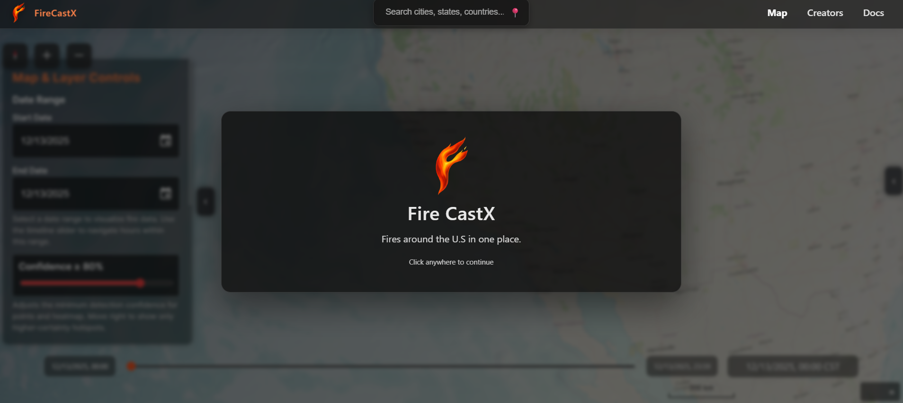

The FireCast X website integrates machine learning, satellite data, and an interactive map to forecast and visualize wildfire activity. Its modular design separates the frontend UI, Flask based backend, and multiple predictive models to ensure scalability and reliability. Users can change between Neural Network, Random Forest, and Logistic Regression models to compare forecasts of different models. FireCast X delivers a data driven and user-friendly platform for accurate wildfire prediction.
Our product gives a 3D map of the United States with fire and weather layers. Secondly, users can look at a specific area to see which is at risk and what fires are currently spreading. A use for this product can look like a user wanting to see a risk area to inform the public of a threat and potential evacuation.
InvestiBestie is a user-friendly investment assistant that helps users evaluate both real estate and stock options.